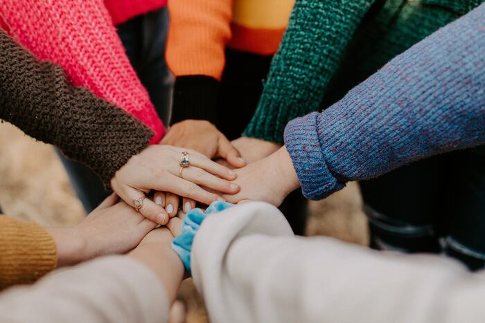

In the ever-evolving landscape of web design and development, innovation is the cornerstone of my approach. Whether it's incorporating cutting-edge technologies, optimizing for performance, or ensuring seamless responsiveness across devices, I thrive on finding creative solutions to the unique challenges presented of each project.
I value effective collaboration and communication with clients and bring leadership to a team environment. I pursue excellence in all my endeavors, deliver on my commitments, and maintain a high level of integrity in all my professional pursuits.
Featured Projects
Please view some of my original designs below. More information can be found at: jennifermorrisondesigns.com.
Sprout & Grow Nursery
Designed and developed a website that communicates focus on organic gardening practices.
View projectTopsail Beach
Designed a landing page for marketing a promotional author event for a local family-owned bookstore.
View projectOasis Books
Designed and published a landing page for marketing a promotional author event for a local family-owned bookstore.
View projectEducation
Wake Technical Community College - Raleigh, NC
Pursuing A.A.S. Web Development
College of William and Mary - Williamsburg, VA
B.A. Economics
Magna Cum Laude and Phi Beta Kappa National Honor Society